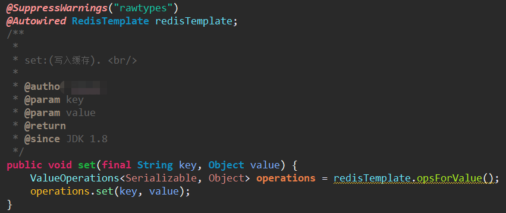
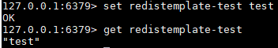
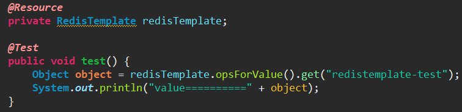
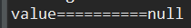
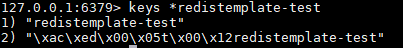
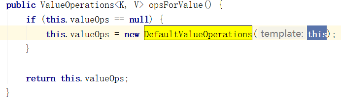
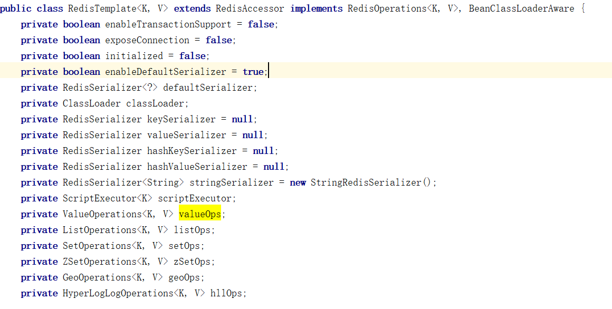
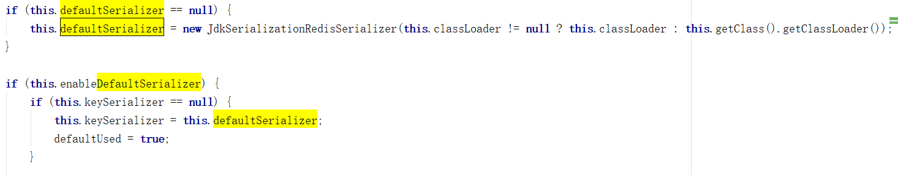
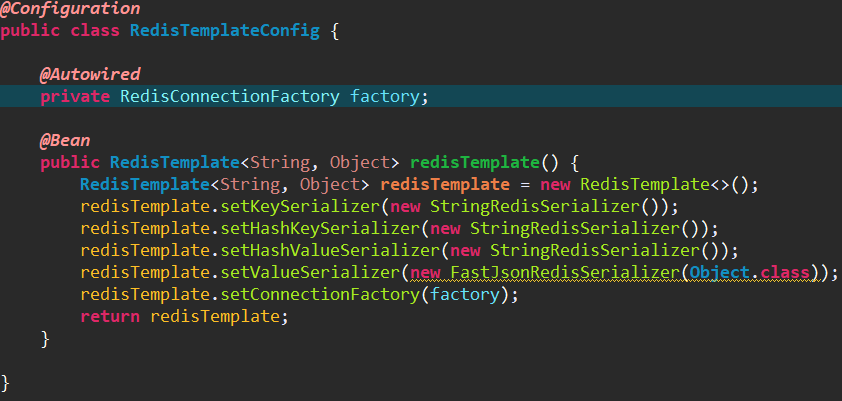

前端时间新项目使用SpringBoot的RedisTemplate遇到一个问题，先简单描述一下问题：不同项目之间redis共用一个，但是我们新项目读不到老项目存储的缓存。新项目搭建的时候没有跟老项目使用同一个core包里的redisutils工具类，老项目使用的是jedis对象来操作redis，新项目使用了springboot封装的redistemplate，代码上存在差异所以出现问题也就很正常，先来看一下新项目里对redistemplate的使用：（截取一个方法为例）
现象：

可以看出来工具直接注入spring容器中的redistemplate，没有指定泛型，在使用的时候通过key的泛型使用的是Serializable，value的泛型是value，从泛型能看出来key跟泛型有一定关系，下面就来验证一下为什么取不到值。我们先往redis里存储一个缓存以字符串为例：

写一个junit测试

测试取缓存

通过结果发现没有取到值，反过来通过测试方法存一下缓存，再看我们存的是一个什么值

通过结果发现我们存进去的key是redistemplate-test，但是redis实际存进去的key却是\xac\xed\x00\x05t\x00\x12redistemplate-test，同理，我们取缓存的时候前面也会自动加上一串看不懂的东西，所以取值的时候肯定也取不出来。做项目的时候时间比较紧，用了其他同事的代码保证项目上线，上线后才回过头去看取不到值的原因，其实同事的代码也很简单，只是在使用redistemplate的时候指定了泛型为string，就可以取到值了，其实也可以使用StringRedisTemplate来操作，但是StringRedisTemplate主要用来存储字符串，它的泛型指定的是String。如果存入对象时，会报错 ：can not cast into String，所以我们就继续修改这个工具，解决key值前面的字符串。
原因：
下面我们简单的看一下redistemplate源码

opsForValue方法会返回一个ValueOperations<K, V>，k跟v就是泛型，我们就是通过valueOps来get，set我们的值。这个方法会new一个DefaultValueOperations对象，传入的template就是当前RedisTemplate对象，向下看：

有很多个RedisSerializer，默认都是null，当调用opsForValue方法时会传入当前redistemplate对象，以keySerializer为例，它默认为null，如果等于null就被赋值dafaultSerializer，默认dafaultSerializer也为空，最终keySerializer就被赋值为JdkSerializationRedisSerializer，所以没有设置序列化方式的时候redistemplate使用的序列化方式为JdkSerializationRedisSerializer，所以我们存入key前面会带上一串东西，而StringRedisTemplate使用的是 StringRedisSerializer，序列化的方式不一样，所以使用的时候key就不会出现一串字符串。
解决方案：
简单了解原因后，现在就来解决这个问题，解决问题的方法就是设置序列化方式

这样解决了上面的问题。问题倒不难，只是自己以前没有遇到过，不知道这个方法是同事从网上直接复制的还是同事自己写的，只能说复制的时候不够严谨，没有考虑到项目的实际情况，这个问题其实只要拿出一块时间去看看代码，查查资料就能解决，所以遇到问题的时候一定要找到原因去解决问题，而不是把问题隐藏掉。